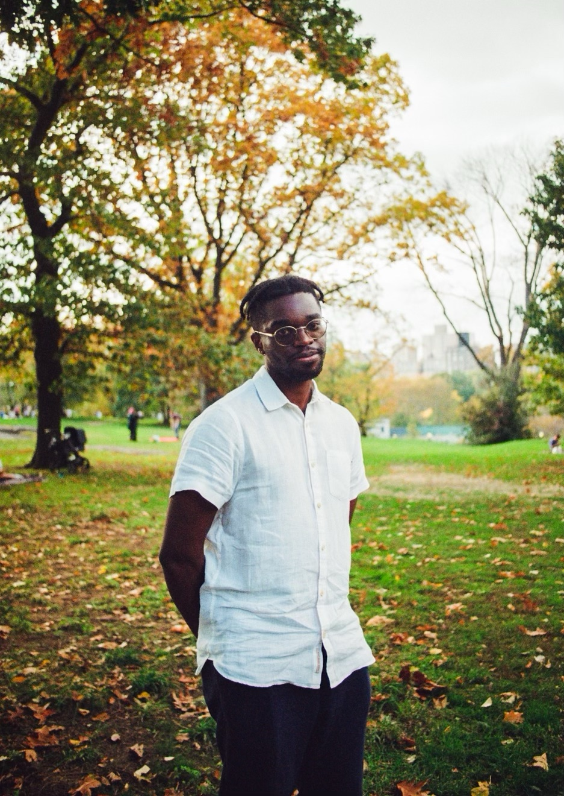
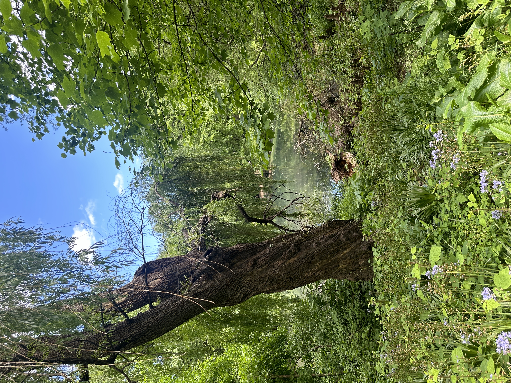
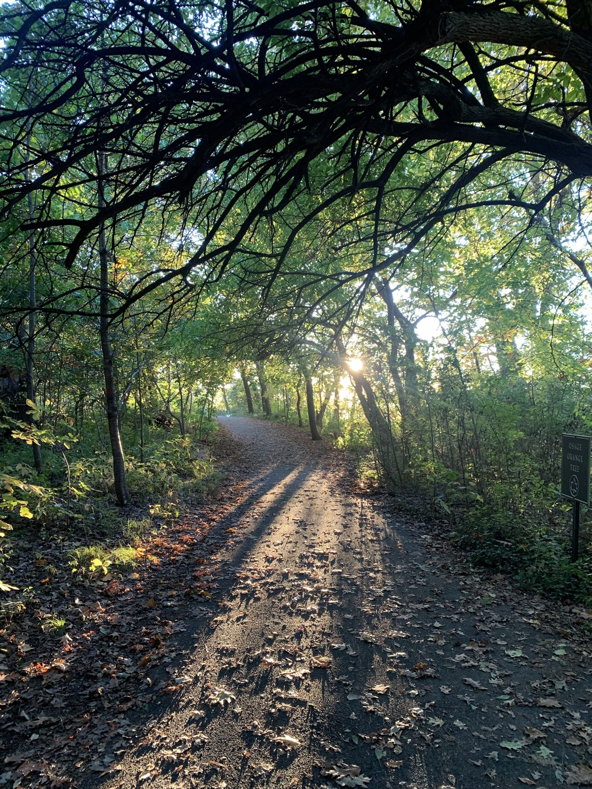

Writing
Short fiction, personal essays, and poems about what it means to keep becoming.

About Yannick Matia
Yannick Matia is a Brooklyn-based marketing operations practitioner and creative writer. His work spans understanding the business needs of teams of all sizes and translating them into actionable insights and automations that comprise a functioning system.
Yannick is a curious explorer of the human experience through physical expression. You will find him running, writing a short story, taking photographs, or connecting to the communities around him through sports fandom and laughter.
Yannick studied Political Economy and Environmental Studies at the University of Southern California.
Beyond the work
Short fiction, personal essays, and poems about what it means to keep becoming.

Watching light, landscape, and ordinary moments become something worth keeping.

Movement as exploration, reset, and a way to pay attention to the world.